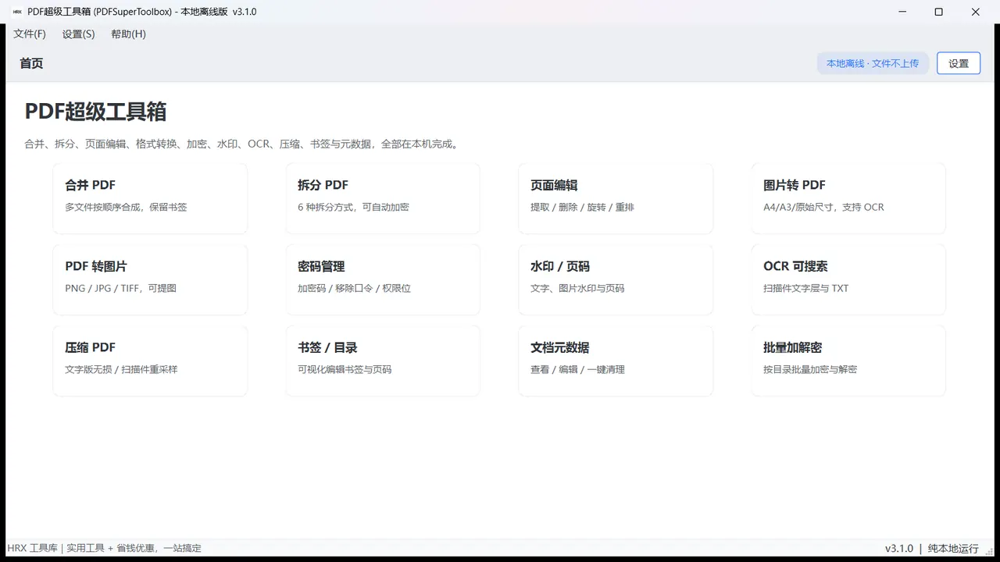
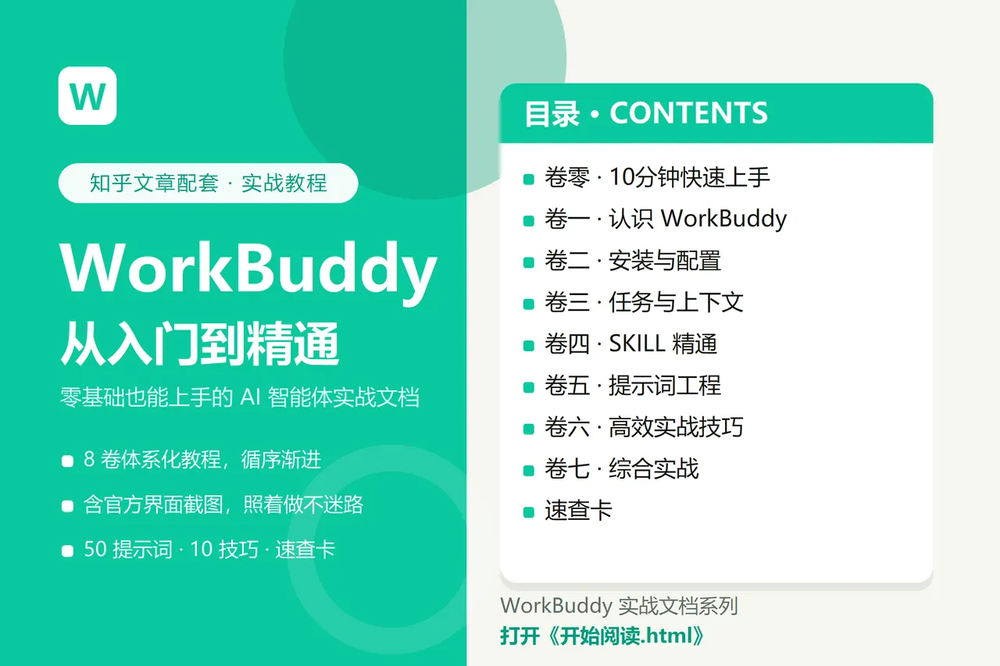

 PDF超级工具箱 PDFSuperToolbox v3.1.0161.2 MB文档处理夸克网盘 +1 合并、拆分、OCR、压缩、水印——装在自己电脑里的 PDF 工具箱 合并 PDF拆分 PDF页面编辑+5 PDF合并PDF拆分PDF压缩PDF转图片 获取安装包 详情
证照快做 IDPhotoKit v0.1.0119.1 MB证件证照夸克网盘 +1 证照快做是一款在本地电脑上制作标准证件照的桌面工具。 照片导入规格库AI 抠图+5 证件照制作证件照换底色报名照签证照 获取安装包 详情
图片去水印 WatermarkRemover v1.29.6489.9 MB图片处理夸克网盘 +1 本地 AI 图片修复：涂抹水印区域，一键修复成自然画面 一键去水印批量去水印快速预览+5 图片去水印一键去水印涂抹修复抹除物体 获取安装包 详情
AI缓存清道夫 AICacheSweeper v0.3.246.2 MB系统清理夸克网盘 +1 AI缓存清道夫是一款专门清理 AI 编程终端和包管理器残留的 Windows 桌面工具。 扫描 AI 终端残留四级安全分级清理前先试算+5 清理C盘AI工具缓存缓存清理Claude Code缓存 获取安装包 详情
 WorkBuddy实战文档系列 共 10 篇1.6 MB教程资料夸克网盘 +1 一套面向零基础新手的 WorkBuddy 实战教程：成体系、带官方界面截图、可直接照做。 大纲与目录（总览 + 阅读…卷零 · 10 分钟快速上…卷一 · 认识 WorkB…+5 WorkBuddy实战教程提示词工程SKILL精通10分钟快速上手 获取资料 详情